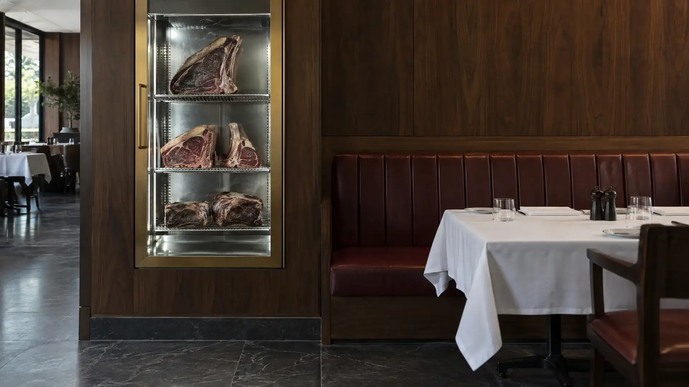

The ageing room
14
DAY · OF 28
The Twenty‑Eight
INDAY 01
OUTDAY 28
Day 14,
behind the glass.
By the door, in plain sight. Every guest walks past the cuts that will be on the menu.
@xxviii.steakhouse

By the door, in plain sight. Every guest walks past the cuts that will be on the menu.